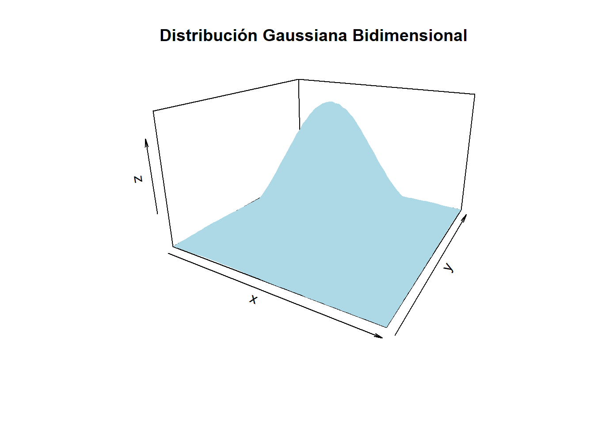

plantemoas modelos teoricos vemos métricas para comparar suponemos que estamos en modelo idondeo donde todo es perfecto pero tengo que hacer una estiamcion puntual no es nada, me toca validar resultados para comparar pruebas dicotómicas
diapo15
Guión
Estimaciones puntuales, por intervalo.
Regiones de confianza.
Cohortes
Caso-control
Comparación entre pruebas diagnósticas
Métricas para comparar.
Criterio de periferia o preferencia (no sé lo que pone) basados en las métricas. Alternativas si el criterio no produce una conclusión.
Estimación de las métricas
Validación
cada pd tiene por detrás cómo he escogido a esa muestra
detrás de las probabilidades hay una distribucion binomial
senisnbiliad: n éxitos positivos en grupo de enfermos
para estimar la prob de falsos positivos — (1-Sp) se usa la v.a.
\[
X \sim \text{número de enfermos en el grupo de sanos"} \sim Bin(n_{\overline{D}}, (1-Sp))
\]
\[
x = n_{\overline{D}}^+
\]
Para estimar p = ppv => X = número de individuos enferos en los que tienen test postitivo
\[
X \sim Bin(n^+, ppv), \quad \quad x = n_{\overline{D}}^+
\]
Para estimar p = NPV => X = número de individuos enferos en los que tienen test postitivo
\[
X \sim Bin(n^-, npv), \quad \quad x = n_{\overline{D}}^-
\]
la cuestion es identificar qué estamos investigando en cada uno de los casos, saber cuál es mi éxito y dentro de qué subgrupo estamos mirando el número de éxitos
la sensi y la especi son dos cantidades. si estimo un ic para esas cosas, estoy cometiendo un error. si estoy estimando dos cosas, el error total que tengo es mayor o la precision total es menor.
los estimadores de la probabildiades de clasificacion son independientes. que la sensi sea grande no influye con que la especi sea grande o pequeña.
prob de IC 0.9, prob de que la sensi esté dentro de un intervalo, 0.9. prob de que la sensi esté dentro de mi intervalo y la especi dentro de mi intervalo, 0.9*0.9
ya que son indep ambas estimaciones vamos a buscar una region de confianza de tal forma que ambas estimaciones estén dentro de esa región con una prob del 0.9.
Región de confianza para (\(\hat{Se}, (1-\hat{Sp})\))
ic de la sensi multiplacado por el ic de 1-sp (es un “multiplicado” teórico para entenderlo)
confianza bidiensional sea 1-alpha
1-apha = prob caer en el IC * prob de caer en el otro IC = beta^2 tq beta=sqrt(1-alpha)
la RC es una zona de confort en dos dimensioesn. si trabajo en con las dos dimensiones separadas consigo una confianza menor a la que yo tenía
diapo18 \(\hat(ppv)\)
estimos los casos positivos: 930 cuántos lo son de verdad: 815
hat(npv) = 327/535
en medcal por defecto te calcula la asitótica, aunque tengas una muestra de 3 esto tira por la asintótica siempre.
Estimamos las razones de verosimilitud con las estimacions de las probabilidades de clasificaciones
\(\hat{DLR^+} = \frac{\hat{Se}}{\hat{1-Sp}}\)
\(\hat{DLR^-} = \frac{\hat{1-Se}}{\hat{Sp}}\)
comparacion de casso positivos que tengo dentro del grupo de enfermos y sanos- en funcion del cociente decíamos que era más verosimil
DLR+^: un resultado positivo es 30 veces más creíble en el grupo de enfermos que en el grupo de sanos DLR+^: comparamos negativos en grupo de sanos y enfermos, gripo de enferms en sanos deben ser pocos, por que lo que DLR-^<<<1, para facilitar la comparativa se le suele dar la vuelta (porque debe ser más fácil interpretar un 2 que un 0.5)
IC para las razones de verosimilutes
hay que ponerse en aquellos casos donde es más facil tener exito, supongamos n grande.
pasamos a escala logarítmica, así separo la componente de la sensi y la componente de la especi. trabajamos con el método delta de la diapo 19.
que dice: las dos razones de vero no son independientes sino que su comportamiento cuando trabajamos con sus logaritmos tienen un comportamiento normal bidimensional. la cobaranza dice: cuando una razon aunmenta la otra disminuye (mirar la matriz de varianzas y covarianzas)
una normal bidimensional. de esa nbidimi puedo crear una RConfianza.
la RC es para los logaritmos de las razones.
library(MASS)library(ggplot2)# Definimos la media y la matriz de covarianzamedia<-c(0, 0)covarianza<-matrix(c(1, 0.5, 0.5, 1), nrow =2)# Generamos los puntos con una distribución normal multivariadadatos<-mvrnorm(n =1000, mu =media, Sigma =covarianza)datos<-as.data.frame(datos)colnames(datos)<-c("X", "Y")library(plot3D)x<-seq(-3, 3, length =50)y<-seq(-3, 3, length =50)z<-outer(x, y, function(x, y)mclust::dmvnorm(cbind(x, y), mean =media, sigma =covarianza))persp3D(x, y, z, theta =30, phi =20, expand =0.6, col ="lightblue", main ="Distribución Gaussiana Bidimensional")

ejemplo.
dado IC del log(hat(DLR+)) = (-0.6,2) cuál es el IC(hat(DLR+)) = (e^-0.6, e^2) = 0.55, 0.79 e^-0.6 < hat(DLR+) < e^2
el test de esfuerzo da positivo tres veces más en los enfermos que en sanos. es tres veces masversosimili encontrar un positivo en la prueba de esfuerzo en un individuo enfermo que en un individio sano
cuando tenemos un resultado negativo en esa prueba es casi cuatro veces 3.7 mas verosimil un negativo sobre un individuo sano que sobre un individuo enfermo.
queriamo pd que tuvieran razones grands grandes en casso de los positivos y peques peques en el caso de los negativos.
pasamos los IC de la escala logartimica a la escala que nos interesa.
Estudios caso control
un grupo sabemos que tiene la enfermedad y otra sabemos que no la tiene
teniendo una idea de que las ramas de estos estudios estan equilirbados tendremos una canitdad en los casos y una cantidad en los controles que suelen estar equilirbados. lo bueno es que tenemos una situacion equilibrada, lo malo es que no es una situacion representativa.
la prevalencia que tenemos en al muestra es muchisimo mayor que en la poblacion. no afecta a la estimacion de sensi, de especi ni las razones. lo que no nos vale son los valores predictivos.
supongamos que tengo una etimacion para la prevalencia real.
en caso control la prevalencia de la poblacion no se conserrva en la muestra, cuando es cohortes ese problema no se tiene. porque he bsuacado un grupo de individuos que se han sometido a un riesgo y he esperado a ver si tenían o no la enfermedad, no he elegido.
trabajo con canitdad no que dependan del tamaño de la muestra, sino de la prevalencia. uso el tma bayes para expresar los valores predictivos en funcion de la sensi y la especi, ed, en las proabildiades de clasficiacion.
ppv = p(D=1 | Y=1) = —formula del otro día => ppv = num: Se * prev den: se.prev + (1-sp)(1-prev)
diapo24. el ic me dice que estima mal la rpeuab diagnóstica. si dando positivo solo acierto al enfermedad de 0.08 a 0.2 (oooo algo así)
el ic 008 a 0.2 no es muy grande pq lo máximo .
tienes un valor positivo en la prueba, dando un diagnóstico positivo, cómo de bien lo haces. la pd no es buena pq solo acertaría entre un 0.08 y un 0.2 basándome en haber visto un valor positivo en la prueba.
si uno toma esta pd para hacer un diagnóstico en funcion del resultado los aciertos son muy pocos.
diapo25.
cada mediada está enfocada a cosas distintas. la probabildiad de prediccion: cómo refleja la prueba el estado real del paciente.
los valores precitivos es al reves, los valroes clinicos de la prueba.
lo tercero como de creible es un valor postivio o negativo.
puedeo elegir cualquiera para comparar dos pd.
los cocienes son fáciles, los odd ratio son odiosos.
si tengo dos pd basadas en unidades distintas, no puedo hacer restas. pero si tengo cocientes sí puedo hacer comparaciones.
si no preferencia basada en prob de clasificacion hayla en la basada en la ppv